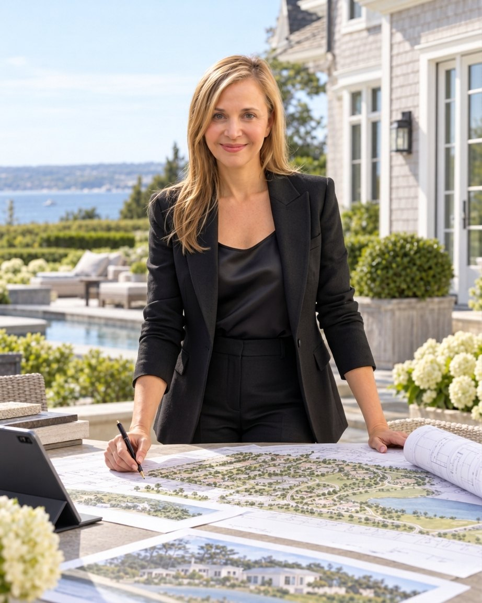

A Visionary Approach
My background in residential and commercial development, land development, and property management has shaped the way I envision and create properties.
For me, development and design are inseparable. I bring together my experience as a developer with my passion for architecture and design, personally guiding each project from its earliest concept through construction and the finishing details.
Working closely with architects and skilled professionals, I oversee both the creative direction and execution, ensuring that every element contributes to the original vision.
Every project is an opportunity to bring imagination, experience, and thoughtful design together.

About Me
As a real estate developer with a passion for architecture and design, I have always believed that every property deserves its own vision and identity.
For me, creating a property is a deeply personal process. I imagine not only what it will look like, but how the people who live there will experience it.
My vision is to create a sense of cozy luxury, regardless of the size or scale of a project. I believe a home should be as welcoming and comfortable as it is beautiful.
My curiosity takes me around the world, exploring new ideas in architecture, construction, technology, materials, and craftsmanship. While I appreciate innovation, I believe in creating timeless spaces rather than following passing trends.
Every property I create is individually conceived, reflecting its own character and possibilities. My personal involvement naturally limits the number of projects I undertake, allowing each to receive the attention it deserves.
For me, bringing a vision to life means creating something truly individual, where beauty, comfort, and practicality come together naturally.
Azita